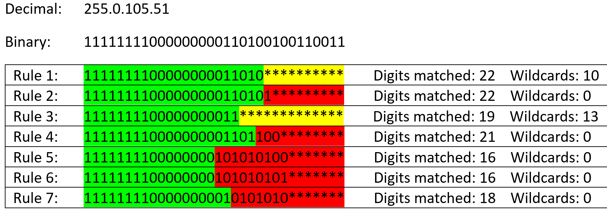

Programming Assignment 3: Longest Prefix Matching Forwarding
Assigned Wednesday October 25th
Due Wednesday November 8th @11:59 PM
GitHub Repo
You will use the same GitHub repo from PA1 and PA2. All of your files for this assignment should go inside a /PA3 folder
Overview
In this assignment, you will implement the logic for forwarding packets of information based on Longest Prefix Matching (LPM). If you are not familiar with LPM, you should rewatch Monday October 9th's lecture around minute 16:45. You will also gain experience with using an HTTP request module/library, and gain experience with string parsing :-). There is
NO SOCKET PROGRAMMING for this assignment (yippee).
Instructions
The information for the forwarding table, and the packets that being tested will come from an external file. You
must retrieve these files via an HTTP request (you cannot read in these files locally using
open()).
Part 1: Loading the forwarding table
The prefixes and information for the routing table are located at the following endpoint:
https://www.cs.montana.edu/pearsall/classes/fall2023/466/programs/prefix_matching.csv . You must issue an HTTP request using the
requests module, and the HTTP response will contain a massive string of this csv file.
You will need to parse this string, and load it into a data structure of some kind (I would recommend a dictionary).
Extra information: Typically routing tables utilize
CIDR notation and subnet masks for prefix matching, but we will not be using that notation here. Additionally, most routing tables have an "Otherwise" or "Default" option in cases where an IP address does not match any of the prefix. We also will not be implementing that here (Reese got stuck on it for like an hour and decided the trash that idea).
Part 2: Getting list of packets to test
The packets being tested in this program are located at the following endpoint:
https://www.cs.montana.edu/pearsall/classes/fall2023/466/programs/packets.csv . You must issue an HTTP request using the
requests module, and the HTTP response will contain a massive string of this csv file.
You will need to parse this string, and load it into a data structure of some kind (I would recommend a list or dictionary).
NOTE: The packets in
packets.csv are IPv4 addresses, but the prefixes are in binary. You will need to convert the IPv4 addresses to their binary representations. You can write this functionality yourself, or you can use the following code:
where
ipv4_addresses is a python list of addresses from packets.csv in dotted decimal IPv4 notation. The output after the for loop will be a list (
packets) of binary IP addresses, which you can then use in your forwarding table.
Part 3: Testing the packets in your forwarding table
At this point, you should have your data structure that represents your forwarding table, and list of IP addresses (in binary) to test on your forwarding table.
You need to run each IP address through each rule in the forwarding table to see which interface the packet should be forwarded on. There are many ways you can do this. If you need a hint, consider checking each character between the IP address and the prefix rule. Keep a counter for each rule for number of characters matched, and then select the rule that gave the highest counter.
The interface with the highest digits matched should be selected. If two interfaces have the same number of digits matched, you will need to select the interface with the more wildcards digits matched.
Here is a breakdown for the first packet in packets.csv.

Rule 1 and Rule 2 have the same number of digits matched, however we were able to reach the wildcard digits of rule 1, so we select interface 1.
Rule 3 was able to also match the entire IP address, however we were able to match more digits in rule 1 (22 > 19), so we select interface 1.
Expected Output
When you run your program, it should
similar to this output. Your program should clearly print the forwarding table, and your program should clearly print out which packet gets forwarded to which interface.
Video Demo
You will record a video demo that highlights the functionality of your program. You can do this with Panopto , or you can record with another recording software (such as OBS) and post it to youtube as public or unlisted.
The video should show you running program,
and briefly explaining how your code works. If you do not record a video demo, then you will lose
a very large amount of points. Please double check and make sure your video is either unlisted, or public.
Submission Instructions
All your files need to be pushed to a
/PA3 folder in your
[last_name]-[first_name]-csci466 repository. You need to include a
README.md in your
/PA1 folder. The link to your video demo should appear at the very top of your README. Additionally, your README should have the names of each group member, a section that describes how to run your program(s), and a link to your video demo. When you are ready to submit, you will submit
just the link to your private
[last_name]-[first_name]-csci466 repository to D2L.
Partners
You are allowed to work with two partners (groups of three). If you work with a partner, each member needs to create their own private github repository. When you are ready to submit to D2L, each group member needs to submit the link to the repo. Make sure you clearly mention in your README/Video/Submission who the group members are.
Grading Rubric (100 Points)
| Criteria |
Points |
| Rules were retrived using an HTTP request |
10 |
| Packets were retrieved using an HTTP request |
10 |
| IP addresses are checked properly and forwarded to the correct interface (incorrect interface: -10 points) |
70 |
| Your code is submmited to a private Github repo that has a README descibing how to run your program(s) and contains a link to your video demo |
10 |
Penalties
- Running code results in errors before runtime: -30 points
- Running code results in errors during runtime: -15 points
- No video demo: -50 points
- Your repository is public: -100 points
Helpful Examples
Solution